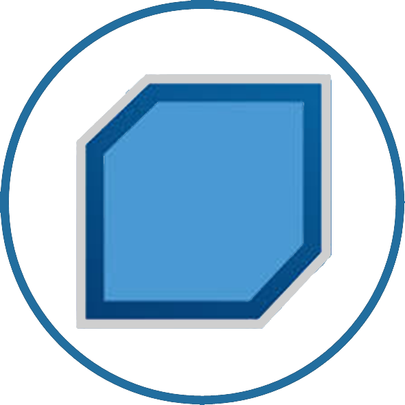
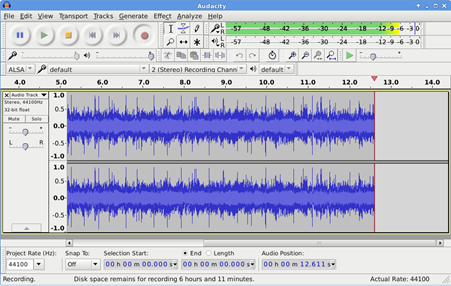

História do BackBox
O projeto foi originalmente desenvolvido na Itália em 2010. Surgiu quando todas as distribuições de testes de penetração eram relativamente estáveis, de modo que o tempo que uma pessoa precisou gastar para configurar uma ferramenta foi maior do que o uso real da ferramenta para a atividade de pentest. Raffaele sentiu a necessidade de criar uma distribuição de teste de penetração com todas as suas ferramentas prontas para serem executadas para o próprio uso.
No começo, era simplesmente um ISO do seu sistema operacional, um tipo de backup que ele mantinha constantemente atualizado. Um dia ele decidiu compartilhar a primeira versão do BackBox Linux on-line para aqueles que tinham necessidades semelhantes. Então algo aconteceu. Cada vez mais entusiastas começaram a usar o BackBox e começaram a participar do projeto como uma comunidade. Logo depois disso, a BackBox se tornou uma das distritos pentest mais populares do mundo.
Site Backbox
Download BackBox
Pdf BackBox
Versões
Aplicativos apresentados
Stellarium
É um software livre de astronomia para visualização do céu, nos moldes de um planetário. Com excelente qualidade técnica e gráfica, o programa é capaz de simular o céu diurno, noturno e os crepúsculos de forma muito realista. É capaz ainda de simular planetas, luas, estrelas, eclipses e tudo em tempo real, fornecendo informações detalhadas de milhares de corpos celestes.

Audacity
É um software livre de edição digital de áudio disponível principalmente nas plataformas: Windows, Linux e Mac e ainda em outros Sistemas Operacionais. O código fonte do Audacity está sob a licença GNU General Public License. A sua interface gráfica foi produzida utilizando-se de bibliotecas do wxWidgets. É um programa que permite editar, gravar, importar e exportar diversos formatos diferentes de arquivos de áudio. É possível gravar músicas e sons ao vivo ou converter diretamente material em fitas e CDs.
Spotify
É um serviço de streaming de música, podcast e vídeo que foi lançado oficialmente em 7 de outubro de 2008. É o serviço de streaming mais popular e usado do mundo. Ele é desenvolvido pela startup Spotify AB em Estocolmo, Suécia. Ele fornece conteúdo protegido de conteúdo provido de restrição de gestão de direitos digitais de gravadoras e empresas de mídia. O Spotify é um serviço freemium; com recursos básicos sendo gratuitos com propagandas ou limitações, enquanto recursos adicionais, como qualidade de transmissão aprimorada e downloads de música, são oferecidos para assinaturas pagas.